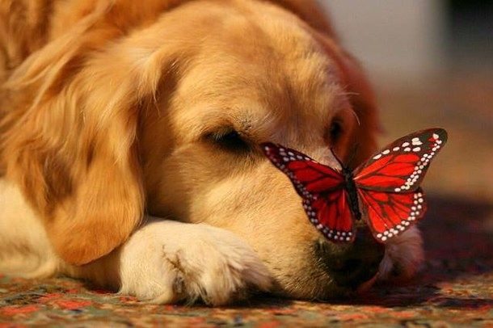

Introduction
Dogs, (Canis lupus familiaris), are domesticated mammals, not natural wild animals. They were originally bred from wolves. They have been bred by humans for a long time, and probably were the first animals to be domesticated. .
Today, some dogs are used as pets while others are used to help humans do their work. Dogs are popular pets because they are usually playful, friendly, and listen well to humans. Thirty million dogs in the United States are registered as pets. Dogs eat both meat and vegetables, often mixed together and sold in stores as dog food. Dogs often have jobs, including police dogs, army dogs, service dogs, fire dogs, messenger dogs, hunting dogs, herding dogs, or rescue dogs.
Dogs are sometimes called "canines," which comes from the Latin word for dog - canis. Sometimes people also use "dog" to describe other canids, such as wolves. A baby dog is called a pup or puppy. A dog is called a puppy until it is about one year old.
Dogs are sometimes referred to as "man's best friend" because they are kept as domestic pets and are usually loyal and like being around humans.
Origin of Dogs
All dogs are descended from wolves, by domestication and artificial selection. This is known because DNA genome analysis has been done to discover this. Dogs have been bred by humans.
The earliest known fossil of a domestic dog is said to be from 31,700 years ago in Belgium. Scientists believe that dogs have lived with people for at least 30,000 years. In 2013, a study was published that showed that the skull and teeth of a canid, dated to 33,000 years ago, had characteristics closer to a dog than to a wolf, and the authors determined that "this specimen may represent a dog in the very early stages of domestication.
Other signs of domestication are that sometimes, dogs were buried together with humans. Evidence of this is a tomb in Bonn, where a man of about 50 years of age, a woman of about 25 years of age, the remains of a dog, and other artifacts were found. Radiocarbon dating showed that the human bones were between 13,300 and 14,000 years old.
10 Interesting Facts About Dogs
- There are hundreds of different breeds of dogs and around 400 million dogs in the world.
- The dog has earned the nickname “man’s best friend”.
- The largest breed of dog in the world is the Irish wolfhound. The smallest dog breed is the Chihuahua (dog)
- The oldest dog who ever lived was a cattle dog from Australia called Bluey who lived to be 29 years and 5 months old.
- A dog’s nose print is unique; it is similar to human fingerprints in that no two are the same.
- Dalmatian puppies are born completely white and develop their spots as they grow.
- Dogs dream just like humans do.
- Little dogs are often called toy dogs, or lap dogs – because they’re so little they look like a toy and can easily fit on your lap.
- A dog is as smart as a 2 years old child and can recognize around 150 words and gestures.
- Dogs cannot eat raisins, grapes, onion, chocolate, or garlic because it makes them sick.
Appearance and Behavior
Dogs have four legs and make a "bark," "woof," or "arf" sound. Dogs often chase cats, and most dogs will fetch a ball or stick.
Dogs can smell and hear better than humans, but cannot see well in color. Due to the structure of the eye, dogs can see better in dim light than humans. They can also see further around before moving their eyes than a human can.
Like wolves, wild dogs travel in groups called packs. Packs of dogs are ordered by rank, and dogs with low rank will submit to other dogs with a higher rank. The highest-ranked dog is called the alpha male. Each dog in a pack helps and cares for others. Domesticated dogs often view their owner as the alpha male.
Lifespan
Different dog breeds (kinds) have different lifespans. In general, smaller dogs live longer than larger dogs. The size and the breed of the dog change the average lifespan of a dog. Breeds such as the Dachshund usually live for fifteen years, while Chihuahuas can reach age twenty. The Great Dane, on the other hand, has an average lifespan of six to eight years; some Great Danes have lived for ten years.
Best Dogs for Kids
The best dogs for kids are ones that have calm personalities and are happy to socialize with everyone in the family.
Having a family dog can also teach children cooperation and responsibility. For example, a child can help with chores such as walking, feeding, and brushing the dog.
Here are some of the most popular dog breeds for kids:
Some Of The Prominent Dog Breeds Or Groups:
Here is a list of primary breeds or groups into which dogs can be divided into. Let us take a look at them.
| Number | Group | Breeds |
|---|---|---|
| 1 | Companion Dogs | Affenpinscher, American Eskimo, Bulldog, Boston Terrier, French Bulldog. |
| 2 | Hybrid Dogs(Hybrid Dogs) | Goldendoodle, Labradoodle, Maltese Shih Tzu |
| 3 | Terrier Dogs(earth dogs) | American pit bull terrier, Bull terrier, Border terrier, Australian terrier. |
| 4 | Hound Dogs(hunter dogs) | Afghan hound, American English coonhound, Azawakh |
| 5 | Herding Dogs(watchdogs) | Australian kelpie, Basque shepherd dog, an Australian shepherd |
| 6 | Working Dogs | Akita, Alaskan malamute, Bernese mountain, Black Russian terrier |
| 7 | Sporting Dogs | American water spaniel, Barbet, Brittany, Bracco Italiano. |
| 8 | Non-Sporting | American Eskimo, Bichon fries, Boston terrier, Bulldog |
| 9 | Mixed Breed Dogs | Labradoodle, Peekapoo, Schnoodle, Yorkipoo, Maltipoo. |
| 10 | Toy dogs | Affenpinscher, Brussels griffon, Cavalier King Charles spaniel, Chihuahua. |